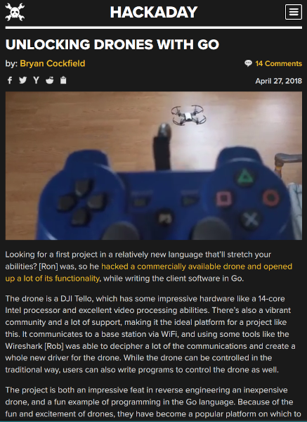

You are here

You are here
Ron Evans (@deadprogram)
Technologist For Hire
hybridgroup.com
Software that makes your hardware work
Go Back To The Future
An Atemporal History Of Go
1970's
Bell Labs
Go public release - 2009

RubyConf 2010 - New Orleans

Eleanor McHugh
I Do Not Start Learning Go

RubyConf 2011 - New Orleans

Waza (Jan 2012) - San Francisco

"Concurrency is not Parallelism"
Rob Pike
I Still Do Not Start Learning Go

RailsConf (Apr 2012) - Austin

Jim Weirich
MagmaConf (Jun 2012) - Manzanillo, MX

Blake Miserany
I Finally Start Learning Go
Gobot (2013)
Go Robotics and IoT
gobot.io

Gophercon 2014, Denver

Go not for embedded quote

Go great for embedded quote
"The street finds its own uses for things"
- William Gibson

Rob Pike Programming Robot using Go
"Running Golang On The Intel Edison"
Hackaday - Sept 25, 2014

Gophercon 2015, Denver
BB-8

Gophercon 2016, Denver

Gophercon 2017, Denver

GoCV
Computer Vision Using Go (2018)
gocv.io

"Unlocking Drones With Go"
Hackaday - Apr 27, 2018

Gophercon 2018, Denver

"Computer Vision Using Go"
Drone demo
Some code
See the code
Drone demo
TinyGo
tinygo.org

Gophercon 2019, San Diego

Gopherbot

"Small is The New Big: Go On Microcontrollers"
"TinyGo Brings Go To Arduino"
Hackaday - Sep 4, 2019
hackaday.com
Pandemic 2020-2021

2053: A Go Odyssey
Gotime - Jun 2022

Gophercon 2022, Oct 2022 - Chicago
"FOSDEM Sees Surprise Pico Balloon Event"
Hackaday - Feb, 2023
hackaday.com

Gophercon 2023, San Diego
Gophercon 2024, Chicago
What about the future?
Will the machines make human Go programmers irrelevent?
Will the machines destroy all the humans?
Let's ask the machines themselves
Talking Heads
A Panel Discussion Between Machines
Llama 3
Phi 3
Gemma

Talking Heads Architecture
Panelist Architecture
Ollama
LangChain Go
Piper
Panelist
See the code
Dollhead Architecture
TinyGo
dollhead
See the code
Moderator Architecture
Moderator
See the code
Talking heads demo
“We tend to overestimate the effect
of a technology in the short run
and underestimate the effect in the long run.”
- Roy Amara